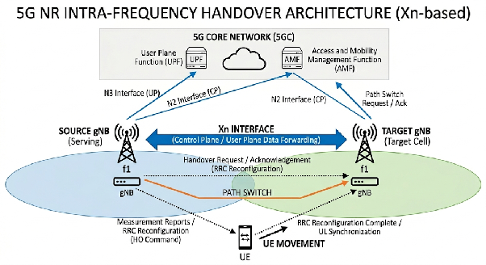
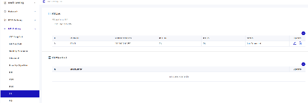

HANDOVER BAICELLS
Handover en Redes Celulares
1. ¿Qué es el Handover?
El Handover (o traspaso) es el procedimiento fundamental en las redes móviles que garantiza la continuidad de una sesión de comunicación (voz, datos o multimedia) mientras el equipo de usuario (UE) se desplaza de la zona de cobertura de una celda a otra.
En términos técnicos, es el proceso mediante el cual el contexto del UE (parámetros de seguridad, flujos de QoS, estados de la conexión RRC) es transferido desde la estación base de origen (Source gNB) a la estación base de destino (Target gNB), minimizando la interrupción del servicio.
En este esquema, puedes observar cómo la interfaz Xn permite que los gNBs se comuniquen directamente, negociando el traspaso sin necesidad de recurrir siempre al Core (AMF/UPF), lo que reduce drásticamente la latencia.

2. Tipos de Handover
Los handovers se pueden clasificar según su mecanismo de conexión o el escenario de frecuencia:
| Tipo de Handover | Descripción |
|---|---|
| Hard Handover | Conocido como "Break-before-make". La conexión con la celda de origen se desconecta antes de establecerse la nueva. Es el estándar en 5G NR. |
| Soft Handover | Conocido como "Make-before-break". El UE mantiene enlaces temporales con varias celdas simultáneamente antes de soltar la anterior. Más común en tecnologías antiguas (como WCDMA). |
| Intra-frecuencia | El UE cambia entre celdas que operan en la misma banda de frecuencia. Es el caso más frecuente y sencillo. |
| Inter-frecuencia | El UE cambia entre celdas en bandas de frecuencia distintas, requiriendo que el UE realice mediciones de radiofrecuencia más complejas. |
| Intra-gNB | El handover ocurre entre celdas controladas por la misma estación base (gNB). |
| Inter-gNB | El handover ocurre entre dos estaciones base distintas (requiere interfaz Xn o N2). |
3. Consideraciones para la configuración de Handover "Intra-frecuencia" entre gNBs
Cuando configuras un handover entre dos gNBs distintos en la misma frecuencia, el objetivo es garantizar una movilidad fluida evitando el "efecto ping-pong" (cuando un usuario salta de una celda a otra y vuelve repetidamente).
Para optimizarlo, debes ajustar los siguientes parámetros en la gestión de radio (RRM):
A. Eventos de Medición (Measurement Events)
Para Handover Intra-frecuencia, se utiliza principalmente el Evento A3:
- Definición: El evento se dispara cuando la calidad de la señal de la celda vecina se vuelve mejor que la de la celda de servicio (SpCell) por un margen determinado (offset).
- Configuración: Es vital ajustar el
a3-Offsetcorrectamente. Si el valor es muy bajo, el handover se activará con fluctuaciones mínimas de señal, provocando inestabilidad.
B. Histéresis
- La histéresis evita que el handover se ejecute por una mejora marginal y transitoria de la señal. Funciona como un "colchón" de seguridad: la celda vecina no solo debe ser mejor, sino mejor por un margen igual al
offset + hysteresis.
C. Time-to-Trigger (TTT)
- Es el tiempo que las condiciones del evento (en este caso A3) deben cumplirse de manera ininterrumpida antes de que el gNB ordene el handover.
- Impacto: Un TTT demasiado corto genera inestabilidad (ping-pong); un TTT muy largo puede provocar la caída de la llamada si el usuario se mueve muy rápido hacia una zona de sombra.
D. Configuración de Interfaz Xn
- Asegúrate de que la conectividad Xn-C (Control Plane) y Xn-U (User Plane) esté activa entre los gNBs vecinos.
- Verifica que las listas de vecinos (NRT - Neighbor Relation Table) estén actualizadas. En 5G, esto se suele hacer automáticamente mediante el ANR (Automatic Neighbor Relation), pero debe validarse en la configuración de red.
E. Estrategia de Carga (Load Balancing)
- Si un gNB está altamente congestionado, puedes configurar parámetros de "Handover Bias". Esto permite "empujar" al UE hacia un gNB vecino aunque la señal en la celda actual aún sea aceptable, optimizando el rendimiento global de la red.
HANDOVER BAICELLS
Configurar el handover intra-frecuencia en las radios Baicells Stellar 227 (con software BaiBNQ 2.5.x) implica preparar tanto la gNB para medir la celda vecina como establecer el enlace de comunicación entre ellas (interfaz Xn).
Como acordamos, empezaremos con la gNB 1. El primer paso fundamental es configurar la Lista de Vecinos (Cell Neighbor List) y la Lista de Medición Intra-frecuencia. Esto le dice a la radio "qué" buscar y "bajo qué condiciones" debe avisar al Core que se necesita un cambio.
Paso 1: Configuración de la Celda Vecina en la gNB 1
Para que la gNB 1 sepa que existe la gNB 2 a su lado, debes registrarla manualmente:
- Entra en la GUI de la gNB 1.
- Ve al menú: NR Setting > NR Neighbor Frequency and Cell.
- Desplázate hasta la sección Cell Neighbor List y haz clic en el icono para añadir una nueva celda.
- Introduce los datos de la gNB 2:
- PLMN ID: El mismo que estés usando en Open5GS (ej. 001/01).
- NCI: El ID de celda único de la gNB 2.
- SSB Absolute Frequency: Debe ser el mismo que configuraste en el "Quick Setting" de la gNB 1, ya que es intra-frecuencia.
- PCI: El Physical Cell ID de la gNB 2.
Paso 2: Activar la Medición Intra-frecuencia
Ahora debemos configurar cuándo el UE (teléfono/CPE) debe empezar a buscar a la gNB 2:
- En el mismo menú (NR Setting > NR Neighbor Frequency and Cell), busca la sección IntraFREQ Measurement List.
- Asegúrate de que haya una entrada para la frecuencia que estás usando.
- Modificación del valor del campo SIntraSearchP:
- Este umbral define cuándo el móvil empieza a medir. Si la señal de la gNB 1 cae por debajo de este valor, el móvil buscará a la gNB 2.
-
ruta exacta:
### Ubicación del parámetro
-
Id al menú: NR Setting > Configure SIB.
- Buscad la pestaña o sección llamada SIB2.
-
Allí encontraréis el campo SIntraSearchP.
-
y la explicación
### ¿Para qué sirve este valor?
El manual lo define como el "umbral de medición intra-frecuencia".
- Rango: 0 a 31.
- Funcionamiento: Este valor le indica al móvil (UE) cuándo debe empezar a buscar otras celdas en la misma frecuencia. Si la señal de vuestra gNB actual es lo suficientemente fuerte (por encima de este umbral), el móvil ni siquiera intentará medir a la gNB vecina para ahorrar batería.
- Recomendación: Para pruebas de handover en laboratorio o distancias cortas, si veis que el móvil no intenta cambiar de radio, podéis subir este valor para forzar al móvil a que empiece a medir la celda vecina mucho antes.
¿Qué valor poner en SIntraSearchP?
Este parámetro es un umbral de potencia. El móvil (UE) mide la señal de la gNB actual (gNB 1) y:
- Si la señal es fuerte (superior al umbral), el móvil "descansa" y no gasta batería buscando vecinas.
- Si la señal cae por debajo de este umbral, el móvil activa su receptor para medir la gNB vecina (gNB 2).
Recomendación: Para vuestras pruebas iniciales, poned un valor alto (por ejemplo, entre 28 y 31). Esto obligará al móvil a estar siempre midiendo la gNB vecina, facilitando que el handover ocurra incluso si estáis cerca de la gNB 1.
Siguiente paso en la gNB 1: Configurar el Evento A3
Una vez que el móvil ya está midiendo a la gNB 2 (gracias al paso del SIB2), necesitamos decirle a la gNB 1 bajo qué condiciones exactas debe dar la orden de "saltar" a la otra radio. Esto se hace con el Evento A3 (Celda vecina se vuelve mejor que la servidora).
Parámetros a modificar en la gNB 1:
NR Setting > Configure Mobility Parameter>A3 List.
- Hysteresis (Histéresis):
- Valor recomendado:
2(que equivale a 1 dB, ya que la unidad suele ser 0.5 dB). - Por qué: Evita que el móvil salte entre radios si las señales son casi iguales.
- A3 Offset RSRP:
- Valor recomendado:
4(que equivale a 2 dB). - Por qué: Es el "margen de seguridad". El handover se activará cuando la gNB 2 sea 2 dB superior a la gNB 1. Es un valor estándar muy equilibrado.
- Time To Trigger (Tiempo de activación):
- Valor recomendado:
100ms(si os deja elegir en el desplegable). - Por qué: Es el tiempo que debe mantenerse la condición de "señal mejor" antes de enviar el informe. Si es muy bajo, cualquier interferencia momentánea provoca un salto falso.
Paso 3: Configuración de la interfaz Xn en la gNB 1
Para que la gNB 1 pueda comunicarse con la gNB 2, debéis seguir esta ruta:
- En la columna de navegación de la izquierda, id a: NR Setting > Configure XN.
- Veréis una pantalla llamada XN Settings (similar a la Figura 7-14 del manual).
- Haced clic en el icono "+" (Add) para añadir una nueva gNB vecina. Se abrirá una ventana emergente llamada Add XN.
- Rellenad los datos de la gNB 2:
- Neighbor gNB ID: Introducid el ID de la gNB 2.
- Neighbor IP Address: Introducid la dirección IP que tiene asignada la gNB 2 (normalmente la misma IP que usa para conectar con el Core Open5GS).
- Xn Status: Aseguraos de que esté en ON o Enabled.
Detalles importantes del manual:
- Esta configuración se encuentra detallada a partir de la página 71.
- El manual indica que la interfaz Xn es la que permite el intercambio de señalización y datos directamente entre estaciones base (gNB a gNB).
- Al ser un handover intra-frecuencia, es vital que este túnel Xn esté activo para que la gNB 1 pueda transferir el contexto del usuario a la gNB 2 de forma rápida.
